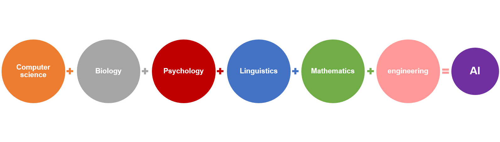

Изкуственият интелект (ИИ; на английски: artificial intelligence, AI) е интелектът, демонстриран от компютри, за разлика от естествения интелект, демонстриран от животни и хора. Това е науката за концепциите, които правят възможно компютрите да извършват задачи, които могат да бъдат разглеждани като интелигентни.Изкуственият интелект при поставяне на задача има способност да анализира обкръжаващата го среда и да предприема действия, които увеличават възможността за постигане на определени цели.Изучаването на възможностите за създаване на такива програми или устройства, наричани интелигенти агенти, е предмет на обособен дял от информатиката.
Как работи Изкуственият Интелект?
AI работи като изучава как мисли човешкият мозък и как хората се учат, взимат решения и решават проблеми. Резултатите от това проучване формират основата за разработване на интелигентен софтуер и системи.
Тази технология е свързана с компютърните науки, биологията, психологията, лингвистиката, математиката и инженерството. Развитието на компютърни функции, свързани с човешкия интелект – разсъждение, учене и решаване на проблеми – подпомогна развитието на AI.
AI често се върти около използването на алгоритми, способни да се учат от данните. Те могат да се усъвършенстват чрез изучаване на нови стратегии или „правила“, които са работили добре в миналото или дори могат сами да пишат нови алгоритми.

Изкуственият интелект в ежедневието
Рекламиране и пазаруване онлайн
Изкуственият интелект се използва широко за предоставянето на персонализирани предложения за покупка въз основа на нещата, които те търсят или са закупували в миналото. В търговията изкуственият интелект има важно значение, защото помага за оптимизирането на продукти и на доставката им, за планирането на нужните наличности и за други неща.
Търсене онлайн
Търсачките набират и обработват големи обеми от данни, за да предоставят все по-прецизни и индивидуализирани резултати от търсенията.
Дигитални лични асистенти
Смартфоните предлагат виртуални асистенти, които отговарят на въпроси, правят препоръки и организират ежедневни рутинни дейности .
Машинни преводи
Софтуерът за устни и писмени езикови преводи разчита на изкуствен интелект за извършването и подобряването на преводите. Подобни технологии се използват и за автоматичното изработване на субтитри за филми.
Интелигентни домове, градове и инфраструктура
Умни термостати анализират нашето поведение, за да спестяват енергия, а градските архитекти разчитат да подобрят мобилността и намалят задръстванията чрез регулиране на трафика.
Автомобили
Макар че автономните автомобили все още не са навсякъде по улиците, днешните коли използват много функционалности с изкуствен интелект, сред които е навигацията. ЕС например е помогнал за финансирането на VI-DAS - автоматични сензори, които идентифицират потенциално опасни ситуации.
Изкуственият интелект срещу COVID-19
На летищата и други места се използват термални камери, които засичат хора с повишена температура. В медицината технологиите помагат за идентифициране на инфекция при сканиране на белите дробове. Изкуственият интелект помага и за проследяване на скоростта на разпространението на болестта.
Борба с дезинформацията
Някои приложения се опитват да идентифицират фалшиви новини и дезинформация чрез анализ на данни от социалните мрежи, търсене на думи със сензационен или стряскащ ефект и оценка на авторитета на онлайн източници.